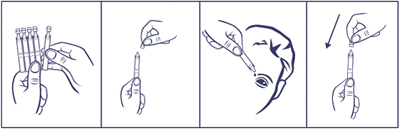
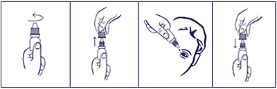

|
 |
| СУЛЬФАЦИЛ НАТРИЯ-СОЛОФАРМ (SULFACIL NATRIUM-SOLOPHARM) sulfacetamide капли глазные | ||||||
|
Клинико-фармакологическая группа: Препарат с противомикробным действием для местного применения в офтальмологии Номер и дата регистрации: ЛП-003062 от 29.06.15 Код ATX: S01AB04 |
Владелец регистрационного удостоверения: зарегистрировано и произведено Представительство: | |||||
Форма выпуска, состав и упаковка ◊ Капли глазные в виде прозрачной, бесцветной или слегка окрашенной жидкости.
Вспомогательные вещества: натрия тиосульфата пентагидрат - 1 мг, 1М раствор хлористоводородной кислоты - до pH 8.0, вода д/и - до 1 мл. 0.5 мл - тюбики-капельницы полиэтиленовые или полипропиленовые (5) - пакеты из пленки фольгированной (1) - пачки картонные. | ||||||
| ||||||
Описание препарата основано на официально утвержденной инструкции по применению и утверждено компанией-производителем для издания 2022 г. | ||||||
Фармакологическое действие |
Фармакокинетика |
Показания |
Режим дозирования |
Побочное действие |
Противопоказания |
Беременность и лактация |
Особые указания |
Передозировка |
Лекарственное взаимодействие |
Условия хранения и сроки годности |
Условия реализации
Фармакологическое действие
Противомикробный бактериостатический препарат, сульфаниламид. Механизм действия обусловлен конкурентным антагонизмом с парааминобензойной кислотой, угнетением дигидроптероатсинтетазы, нарушением синтеза тетрагидрофолиевой кислоты, необходимой для синтеза пуринов и пиримидинов. Активен в отношении грамположительных и грамотрицательных кокков, Escherichia coli, Shigella spp., Vibrio cholerae, Clostridium perfringers, Bacillus anthracis, Corynebacterium diphtheriae, Yersinia pestis, Chlamydia spp., Actinomyces israelii, Toxoplasma gondii. Возможно развитие резистентности к сульфацетамиду. Фармакокинетика
Всасывание и распределение Проникает в ткани глаза, где и оказывает специфическое антибактериальное воздействие. Действует преимущественно местно, но часть препарата всасывается через воспаленную конъюнктиву и попадает в системный кровоток. Количество препарата, попадающее в системный кровоток, недостаточно для развития системного терапевтического эффекта, но достаточно для сенсибилизации при повторном введении. При местном применении Cmax сульфаниламидов в роговице (около 3 мг/мл), влаге передней камеры (около 0.5 мг/мл) и радужке (около 0.1 мг/мл) достигается за первые 30 мин после аппликации. Некоторое количество (менее 0.5 мг/мл) сохраняется в тканях глазного яблока в течение 3-4 ч. При повреждении эпителия роговицы пенетрация сульфаниламидов усиливается. Метаболизм и выведение Сульфацетамид метаболизируется в печени путем N-ацетилирования, метаболиты обладают антибактериальной активностью. Экскреция сульфацетамида происходит в почках путем клубочковой фильтрации. Показания
Режим дозирования
Препарат применяют местно. Назначают по 1-2 капли в конъюнктивальный мешок 6-8 раз/сут (каждые 2-3 ч). Курс лечения - 10 дней. Количество инстилляций может быть уменьшено по мере улучшения состояния. При проведении терапии заболеваний органа зрения, вызванных Chlamydia trachomatis, режим дозирования - по 1 капле каждые 2 ч, местное применение сульфаниламида необходимо сочетать с системной терапией. Порядок работы с тюбиком-капельницей  1. Отделить одну тюбик-капельницу, остальные поместить обратно в упаковку. 2. Вскрыть тюбик-капельницу (убедившись, что раствор находится в нижней части тюбика-капельницы, вращающими движениями повернуть и отделить клапан). 3. Закапать необходимое количество препарата в глаза. 4. Закрыть тюбик-капельницу клапаном. Порядок работы с флаконом  1. Вращающими движениями против часовой стрелки открыть флакон и снять колпачок. 2. Осторожно, не касаясь пальцами наконечника флакона, перевернуть флакон, зафиксировать между большим и указательным пальцами одной руки. 3. Запрокинуть голову назад, расположить наконечник флакона над глазом и указательным пальцем другой руки оттянуть нижнее веко вниз. Слегка надавить на флакон и закапать необходимое количество препарата в конъюнктивальный мешок глаза. Необходимо избегать контакта наконечника открытого флакона с поверхностью глаза и руками. 4. После использования надеть колпачок на флакон и закрыть вращающими движениями по часовой стрелке. После вскрытия флакона препарат можно использовать в течение 1 месяца. По истечении этого срока препарат следует выбросить. При видимых повреждениях флакона применять препарат не следует. Побочное действие
Аллергические реакции, жжение, слезотечение, резь, зуд в глазах, преходящее затуманивание зрения после закапывания, неспецифический конъюнктивит, развитие суперинфекции, тяжелые аллергические реакции на сульфаниламиды (синдром Стивенса-Джонсона, токсический эпидермолиз, молниеносный некроз печени, агранулоцитоз, апластическая анемия). Если любые из указанных в инструкции побочных эффектов усугубляются или отмечаются любые другие побочные эффекты, не указанные в инструкции, пациенту необходимо сообщить об этом врачу. Противопоказания
Применение при беременности и кормлении грудью
Применение препарата в период беременности возможно только в том случае, когда предполагаемая польза для матери превышает потенциальный риск для плода. Следует воздержаться от кормления грудью в период применения препарата из-за отсутствия соответствующих клинических данных. Возможно развитие ядерной желтухи у новорожденных, чьи матери принимали таблетированные формы сульфаниламидов во время беременности, поэтому невозможно исключить риск развития желтухи при приеме сульфаниламида в лекарственной форме капли глазные. Особые указания
Пациенты с повышенной чувствительностью к фуросемиду, тиазидным диуретикам, сульфонилмочевине или ингибиторам карбоангидразы, могут иметь повышенную чувствительность к сульфацетамиду. Возможен чрезмерный рост микроорганизмов, нечувствительных к сульфаниламиду, а также грибковой флоры. Отмечено снижение антибактериальной активности сульфаниламидов в присутствии высоких концентраций парааминобензойной кислоты при наличии большого количества гнойного отделяемого. Необходимо прекратить терапию сульфаниламидами в случае появления симптомов аллергии, а также при усилении боли и других признаков инфекционного воспалительного процесса, увеличении количества гнойного отделяемого. Влияние на способность к управлению транспортными средствами и механизмами В случае развития затуманивания зрения после инстилляции необходимо воздержаться от управления транспортными средствами и занятий потенциально опасными видами деятельности, требующими повышенной концентрации внимания и быстроты психомоторных реакций, до восстановления четкости зрения. Лекарственное взаимодействие
Сульфацетамид усиливает эффект антикоагулянтов непрямого действия. Совместное применение с прокаином, тетракаином, бензокаином снижает бактериостатический эффект сульфацетамида. Дифенин, пара-аминосалициловая кислота (ПАСК), салицилаты усиливают токсичность сульфацетамида. Сульфацетамид несовместим с солями серебра. |
||||||
Вернуться наверх |
||||||
Copyright © Справочник Видаль «Лекарственные препараты в России», Москва, Россия